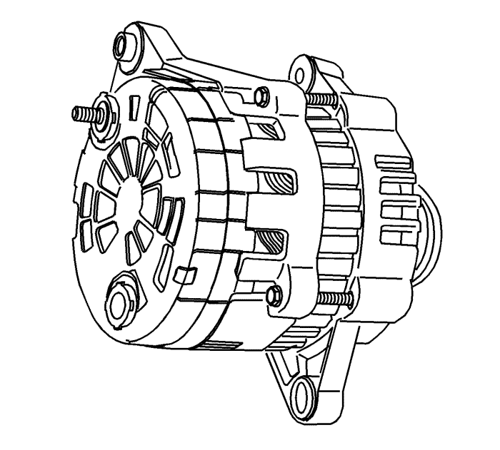
- Extraiga el alternador. Consultar Sustitución del generador : LNQ → LF1 → LE5 .
- Marque una línea de comparación, que no pueda borrarse fácilmente, en el lado del armazón para facilitar el montaje.
- Desmonte, haciendo palanca, la tapa de plástico para dejar a la vista las conexiones del estator.
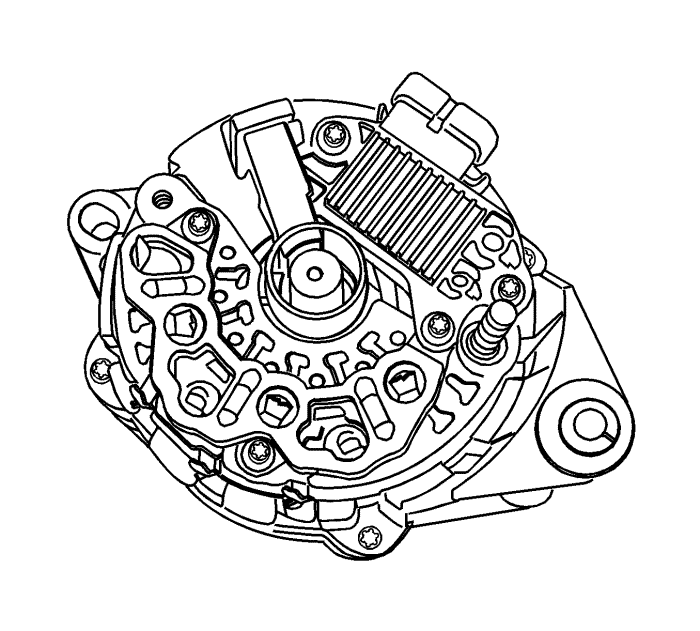
Nota: Si las conexiones del estator no están soldadas, funda el cable. Evite un calor excesivo, ya que puede dañar los diodos en el puente rectificador.
- Desmonte las conexiones del estator de los terminales del puente rectificador cortando los cables.
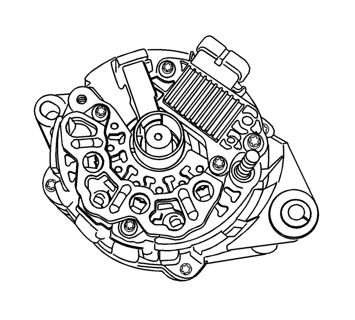
- Desmonte el deflector haciendo palanca.
- Desmonte los tornillos del conjunto del rectificador/regulador/portaescobillas.
Nota: Si el cepillo se puede reutilizar, vuelva a montarlo en el soporte con el pin de retención tras limpiarlo con un trapo suave y limpio.
- Desmonte el conjunto del regulador y el portaescobillas.
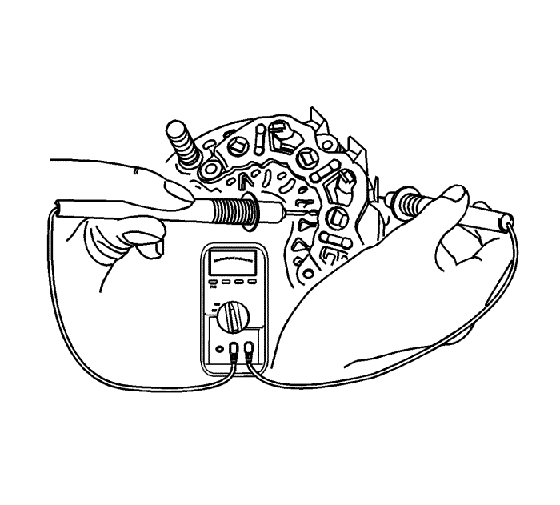
- Compruebe el puente rectificador conectando los terminales del ohmímetro al puente y al disipador térmico.
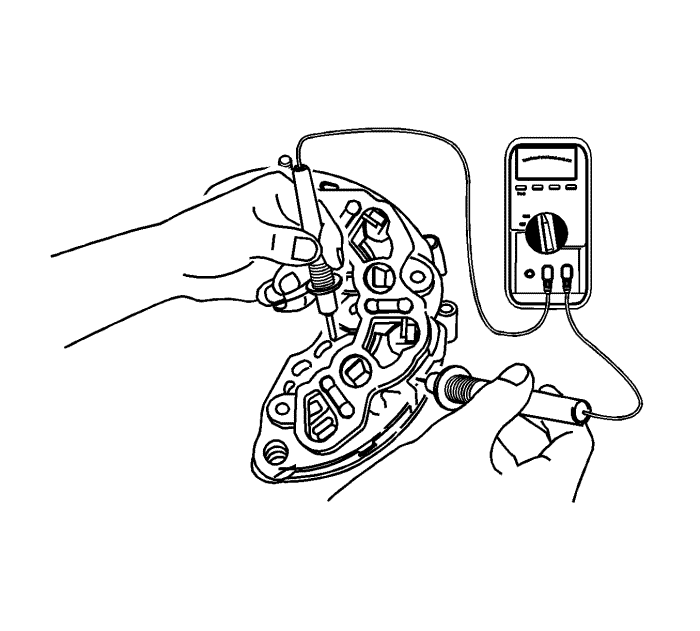
- Vuelva a efectuar la comprobación conectando los terminales del ohmímetro a la inversa.
- Sustituya el puente rectificador, si cada lectura es la misma.
- Compruebe los dos diodos restantes conforme al procedimiento anterior.
Nota: Algunos tipos de ohmímetros digitales no son adecuados para la comprobación de los diodos del puente. En este caso, consulte al fabricante sobre la capacidad de comprobación.
- Compruebe los diodos conectando los terminales del ohmímetro al terminal del puente y a la placa base. Si la lectura es la misma, se debe sustituir el puente rectificador.
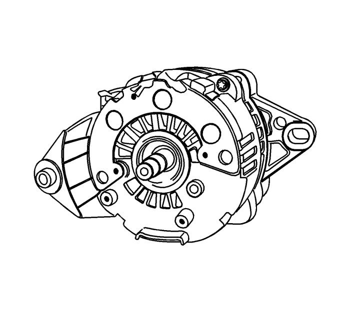
- Desmonte los pernos pasantes del generador.
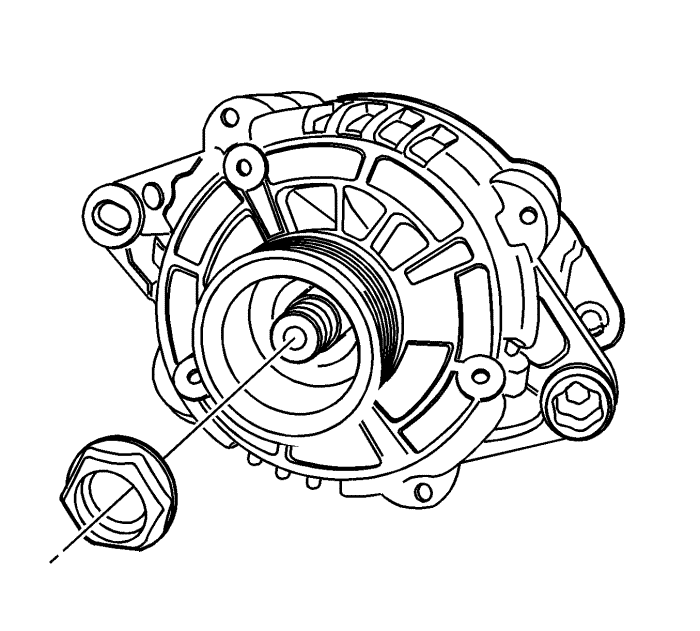
Nota: El par de apriete de esta tuerca es de 81 N·m (60 lib. pie) y normalmente no se puede aflojar manualmente.
- Vaya al lado de accionamiento del generador y desmonte la tuerca del cojinete de dicho lado.
- Desmonte la polea y los collarines.
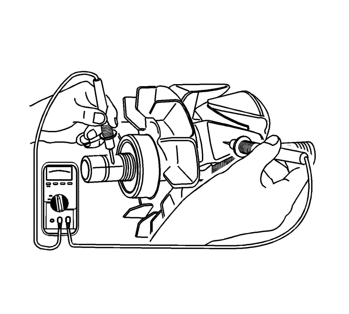
- Compruebe si hay algún circuito abierto en el rotor, utilizando el ohmímetro, con el armazón del lado de accionamiento montado. La lectura debe ser lo suficientemente alta; en caso contrario, debe sustituirse el rotor.
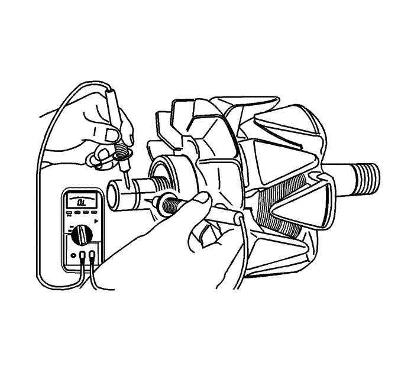
- Compruebe si hay algún circuito abierto o cortocircuito en el rotor. La lectura debe ser 1,7-2,3 o el rotor debería sustituirse.
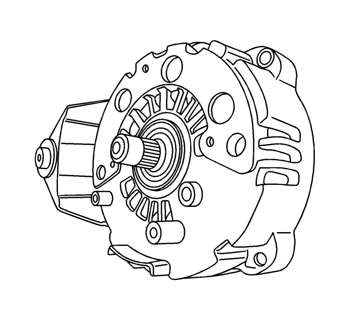
- Desmonte el armazón del lado de accionamiento del eje.
- En vehículos con ventilador interno del generador, desmonte el armazón del lado de accionamiento y el ventilador.
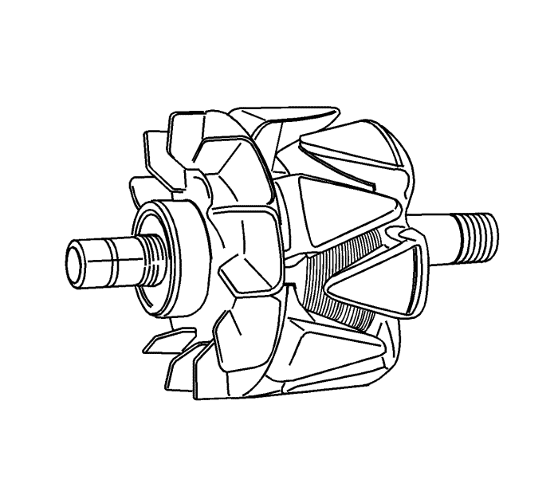
- Desmonte el conjunto del rotor.
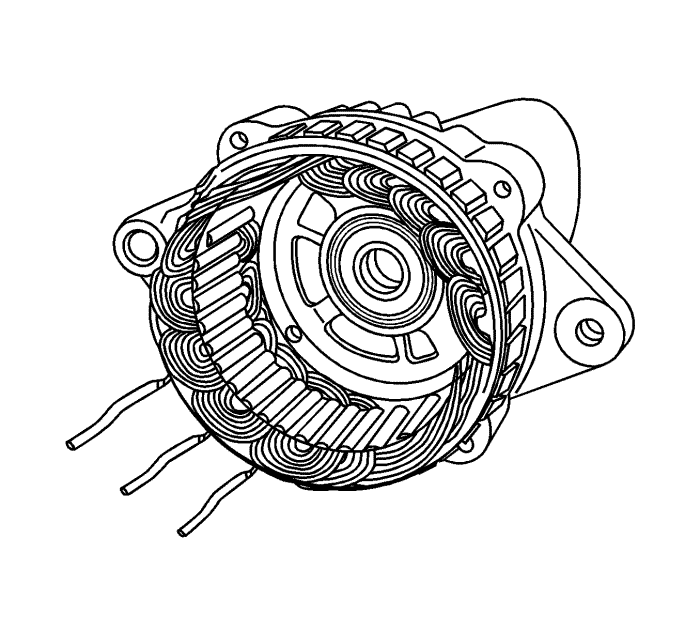
- Desmonte el estator.
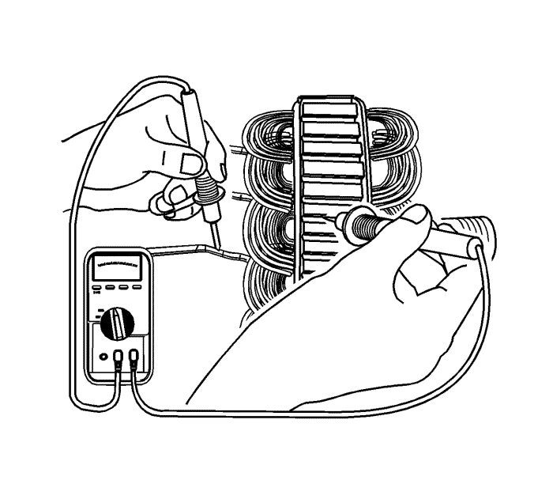
- Compruebe si hay algún circuito abierto en el estator utilizando el ohmímetro.
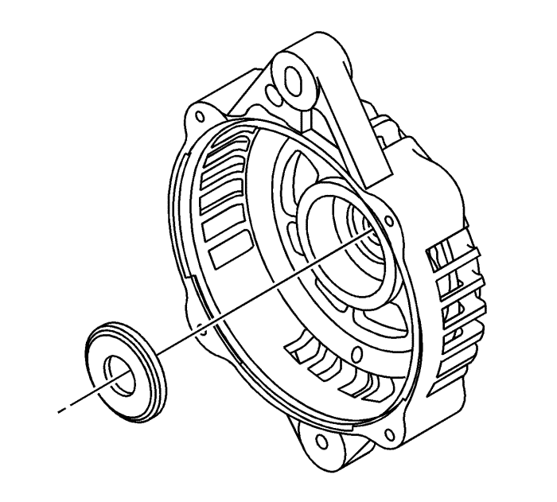
- Desmonte el anillo en el armazón del anillo colector.